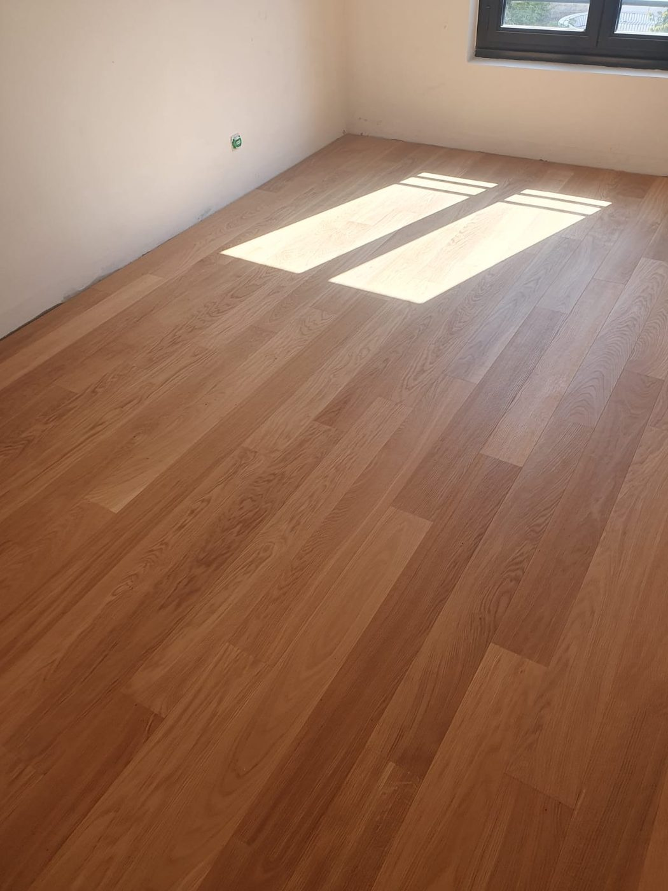

Ce que nous réalisons
Pose, motifs, rénovation
Du droit au point de Hongrie
- Pose collée de parquet contrecollé et massif, en lames droites ou à joints décalés.
- Poses à motif : point de Hongrie, bâton rompu, chevrons. La pose qui demande le plus de précision et celle qui transforme le plus une pièce.
- Ponçage, rénovation et vitrification de parquets existants, y compris parquets anciens cloués.
- Ragréage et préparation de support, dépose de l'ancien revêtement, plinthes et barres de seuil.
- Pose sur plancher chauffant, en contrecollé, dans le respect du DTU 51.2.


Notre méthode
Ce qui se vérifie avant la première lame
Ce que nous vérifions avant de poser
La planéité du support. Un sol irrégulier fait gondoler ou craquer un parquet dans l'année. Le ragréage n'est pas une ligne de devis facultative, c'est ce qui détermine la tenue.
Le taux d'humidité, en particulier en rez-de-chaussée et sur dalle récente.
Le sens de pose et le calepinage. Sur un point de Hongrie, l'axe se décide avant la première lame et ne se rattrape pas. Nous partons du point le plus visible de la pièce, pas du mur le plus commode.
Sur bâti ancien, aucun mur n'est parallèle. Les coupes de rive et les plinthes se travaillent en conséquence.
Prix indicatifs
Fourchettes 2026, Île-de-France
Combien ça coûte
| Prestation | Prix HT |
|---|---|
| Pose collée, lames droites, hors fourniture | 40 à 60 €/m² |
| Pose point de Hongrie ou bâton rompu, hors fourniture | 75 à 120 €/m² |
| Fourni posé, contrecollé chêne, pose droite | 90 à 160 €/m² |
| Ponçage et vitrification d'un parquet existant | 35 à 55 €/m² |
| Ragréage préalable | 18 à 30 €/m² |
| Plinthes fournies et posées | 14 à 22 €/ml |
La pose à motif génère 15 à 20 % de chutes, à prévoir dans la commande de matériaux.
Prix indicatifs, hors fourniture lorsque précisé. TVA à 10 % pour les logements achevés depuis plus de deux ans. Chaque chantier fait l'objet d'un devis détaillé après visite technique gratuite.
Questions fréquentes
4 réponses
Questions fréquentes
Massif ou contrecollé ?
Le contrecollé est plus stable, compatible plancher chauffant et suffisant dans la grande majorité des cas. Le massif se ponce indéfiniment et se justifie sur un projet patrimonial. Sur un point de Hongrie, la différence de rendu est faible, celle de budget ne l'est pas.
Le point de Hongrie coûte-t-il vraiment plus cher ?
Oui. La pose est deux fois plus longue et les chutes montent à 20 %. Comptez 30 à 50 % de plus qu'une pose droite.
Peut-on rénover un parquet ancien plutôt que le remplacer ?
Souvent oui. Un parquet massif cloué, même très abîmé, se ponce et se revitrifie pour une fraction du prix d'un neuf. Nous vous le dirons à la visite, y compris si cela réduit le montant du devis.
Puis-je fournir mon parquet ?
Oui, à condition de valider ensemble la référence avant commande. Nous vérifions l'épaisseur, la compatibilité avec le support et le volume à commander.
Voir aussi : carrelage · plâtrerie et cloisons · peinture
Passer à l'action
Réponse sous 24 h
Parlons de votre projet
Visite technique gratuite, devis détaillé sous 48 heures, dans l'est parisien et à Paris.